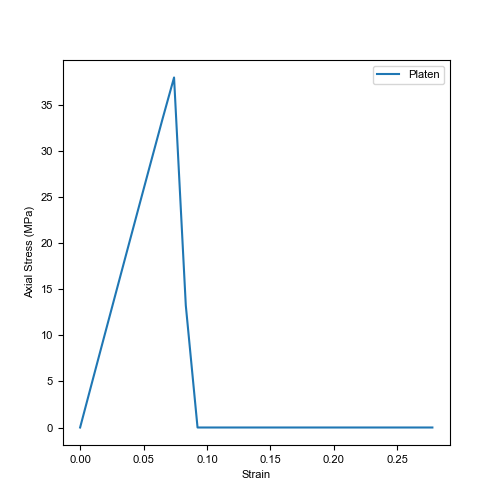
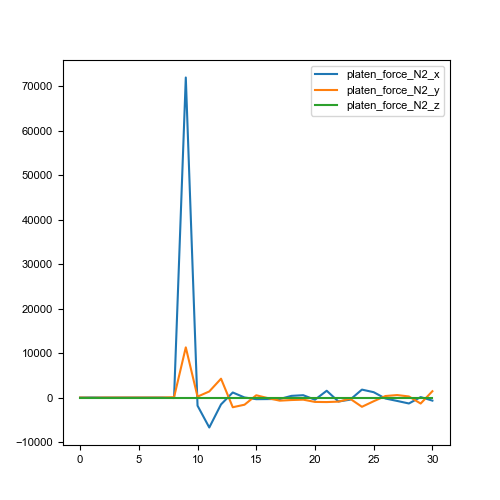
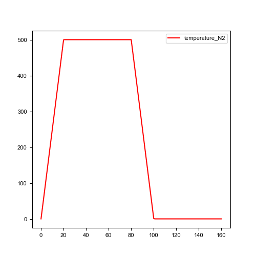
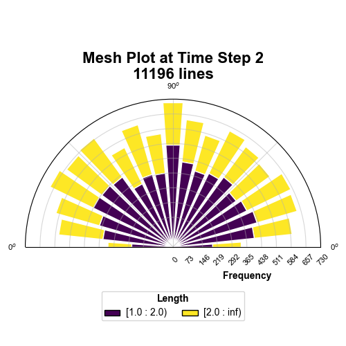

pyfdempp - An FDEM Visualiser Post-Processing Package
About
This Python package performs transformations on hybrid finite-discrete element method (FDEM) models with an unstructured grid in vtk/vtu/vtp format. It currently supports arrays of simulation files from the FDEM solvers:
Y-Geo (and its common derivatives), as well as
The package is heavily dependent on pyvista and is limited to Python >=3.5. The package is maintained by the Grasselli’s Geomechanics Group at the University of Toronto, Canada, and is part of a collaborative effort by the open-source pacakge OpenFDEM.
Functionality
The functionality of this script was developed with the objective of extracting common information needed when running simulations. Highlights of the script are:
Get model information.
import pyfdempp as fd
model = fd.Model("abs_model_path_on_machine")
# Getting number of points in your model.
model.n_points
Output:
11904
Extract information within the FDEM Model based on the name of the array (e.g., Stress, Strain, Temperature, etc…) Works in 2D and 3D.
Extract stress-strain information for UCS and BD Simulations (Works in 2D and 3D). Optional addition of virtual strain gauges (Limited to 2D).
import pyfdempp as fd
model = fd.Model("abs_model_path_on_machine")
model.complete_stress_strain(progress_bar=True)
Output:
Script Identifying Platen
Platen Material ID found as [1]
Progress: |//////////////////////////////////////////////////| 100.0% Complete
1.51 seconds
Platen Stress Platen Strain
0 0.000000e+00 0.000000
1 4.825237e+00 0.009259
2 9.628823e+00 0.018519
3 1.441437e+01 0.027778
4 1.919164e+01 0.037037
.. ... ...
57 2.036137e-30 0.240741
58 2.036137e-30 0.250000
59 2.036137e-30 0.259259
60 2.036137e-30 0.268519
61 2.036137e-30 0.277778
[62 rows x 2 columns]
Plotting stress vs strain curve. 
Calculate the Elastic Modulus of the dataset. Eavg, Esec and Etan can be evaluated. Works in 2D and 3D.
import pyfdempp as fd
model = fd.Model("abs_model_path_on_machine")
df_1 = model.complete_UCS_stress_strain(st_status=True)
# Variants of E tangent
print('Etan at 50%%: %.2fMPa' % model.Etan50_mod(df_1)[0])
print('Etan at 50%% with linear best fit disabled: %.2fMPa' % model.Etan50_mod(df_1, linear_bestfit=False)[0])
print('Etan at 50%% using strain gauge data: %.2fMPa' % model.Etan50_mod(df_1, loc_strain='Gauge Displacement Y', plusminus_range=1)[0])
# Variants of E secant
print('Esec at 70%%: %.2fMPa' % model.Esec_mod(df_1, 70))
print('Esec at 50%%: %.2fMPa' % model.Esec_mod(df_1, 0.5))
# Variants of E average
print('Eavg between 50-60%%: %.2fMPa' % model.Eavg_mod(df_1, 0.5, 0.6)[0])
print('Eavg between 20-70%% with linear best fit disabled: %.2fMPa' % model.Eavg_mod(df_1, 0.2, 0.7, linear_bestfit=False)[0])
Output:
Etan at 50%: 51683.94MPa
Etan at 50% with linear best fit disabled: 51639.22MPa
Etan at 50% using strain gauge data: 50275.03MPa
Esec at 70%: 51681.01MPa
Esec at 50%: 51817.43MPa
Eavg between 50-60%: 51594.49MPa
Eavg between 20-70% with linear best fit disabled: 51660.62MPa
Extract information of a particular cell based on a sequence of array names. This can be extended to extracting information along a line. Works in 2D and 3D.

Extract information of a threshold dataset criteria based on a sequence of array names. Works in 2D and 3D.

Extract mesh information and plot rosette/polar plots. Limited to 2D.

Automatic detection/ User-defined assigment of loading direction when analysing mechanical simulations, namely UCS, BD, and PLT, in both 2D and 3D simulations.
Script Identifying Platen
Platen Material ID found as [1]
3D Loading direction detected as [1] is Y-direction
Values used in calculations are
Area 3721.00
Length 122.00
Progress: |//////////////////////////////////////////////////| 100.0% Complete
Additional Support
Please refer to the user manual for detailed information pertaining to the various functions and their usage/arguments. For specific script requests and bug, please report them on our github page.